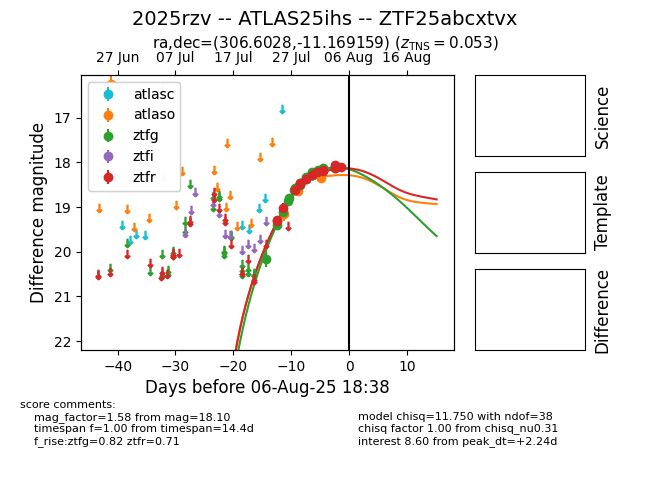

Target 2025rzv at 2025-08-06 21:07, see:
FINK: fink-portal.org/2025rzv
Lasair: lasair-ztf.lsst.ac.uk/objects/2025rzv
ALeRCE: alerce.online/object/2025rzv
TNS: wis-tns.org/object/2025rzv
YSE: ziggy.ucolick.org/yse/transient_detail/2025rzv
alt names
ZTF25abcxtvx (ztf,fink)
2025rzv (tns,yse)
ATLAS25ihs (atlas)
coordinates:
equatorial (ra, dec) = (306.6028,-11.16916)
galactic (l, b) = (33.4247,-26.09647)
photometry
last atlaso=18.39, ztfg=18.10, ztfr=18.10
5 atlaso, 23 ztfg, 15 ztfr detections
